Meet Foxy and a usable pet bed
A36/A37 runtime candidates, rendered by Godot from isolated profiles. The phone window is framed above the pair's floor contact. Room actors are larger and the bed sits to their right above the controls. Initial proportions/window placement were rejected; these captures show the correction for review.
To test: open PETOPIA from the Desktop. A new profile chooses Start → name → Adopt Foxy; an existing save chooses My Pet → Rest / Wake. Back cancels adoption without creating a pet. Settings and resize preserve the typed name. Reopen the game normally to load updated scripts.
Native adoption
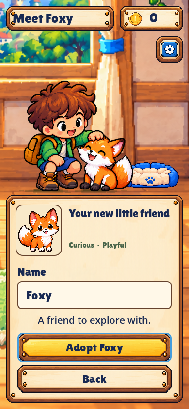
Meet Foxy · Phone390×844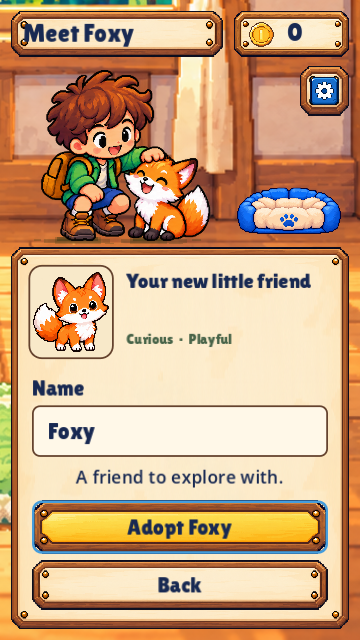
Short phone360×640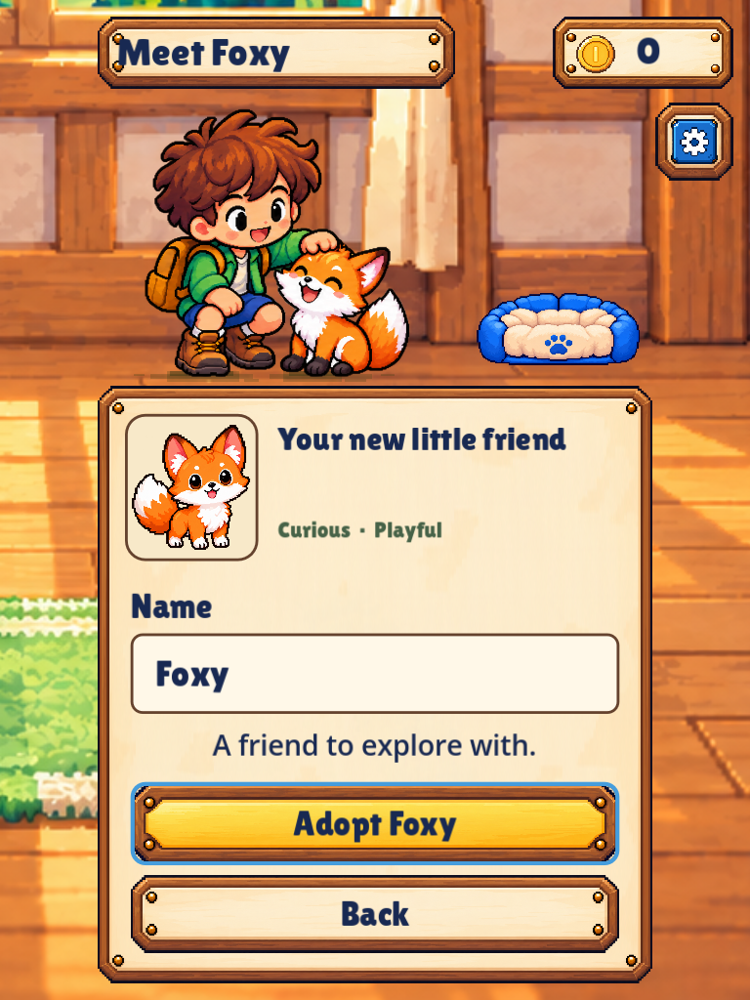
Portrait tablet768×1024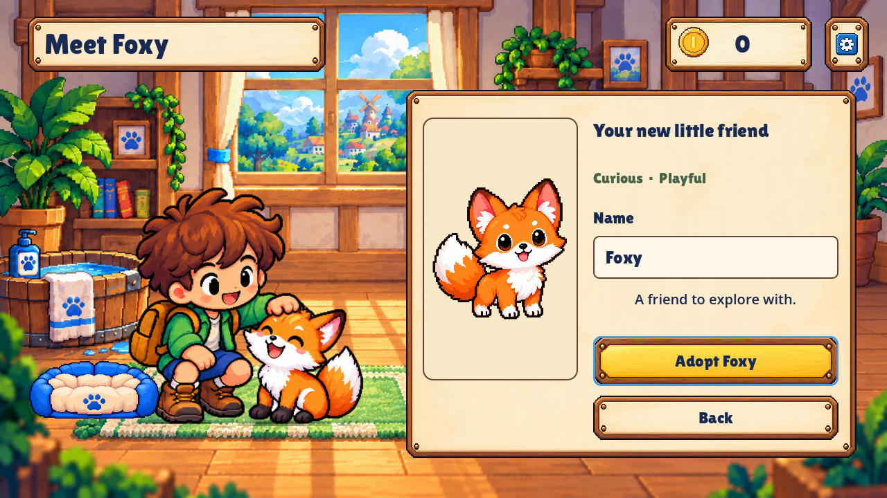
Desktop1280×720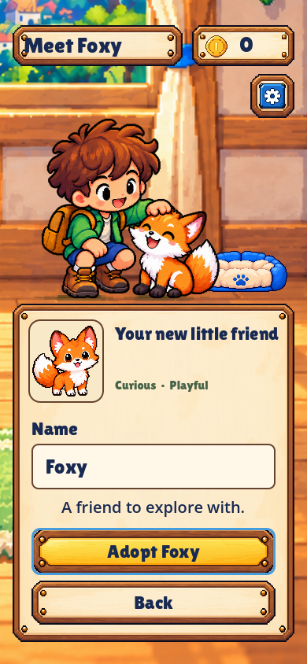
Notch and gesture insets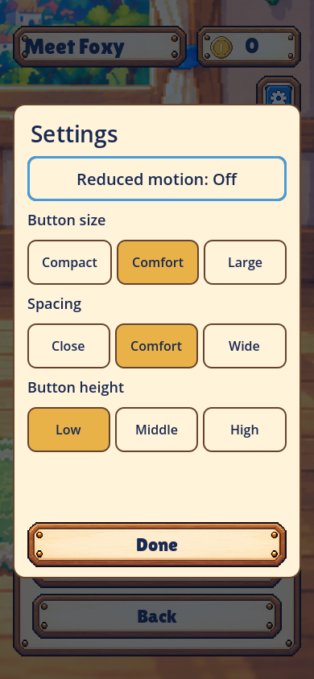
Native Settings · name retained
Home furniture and sleep
A38 · Compare all four pet ages, awake and asleep. Foxy now grows separately from the fixed bed; teen/adult identity artwork remains provisional.
The bed is a separate two-state object. Rest/Wake uses the existing durable care action and restores after restart. Home still uses the previous responsive care controls: the full V03 native layout, feeding/washing choreography and stage-specific transitions remain pending.
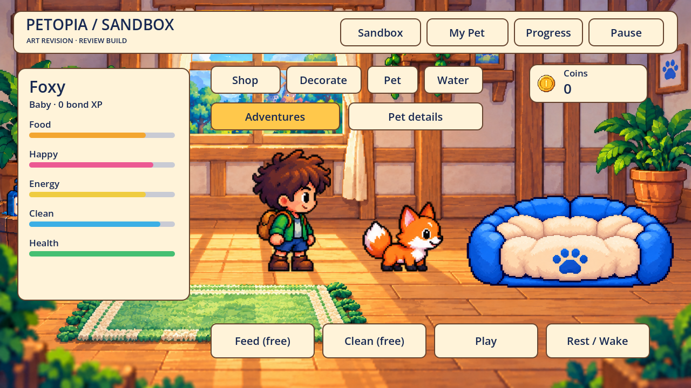
Larger room actors · empty bed beside them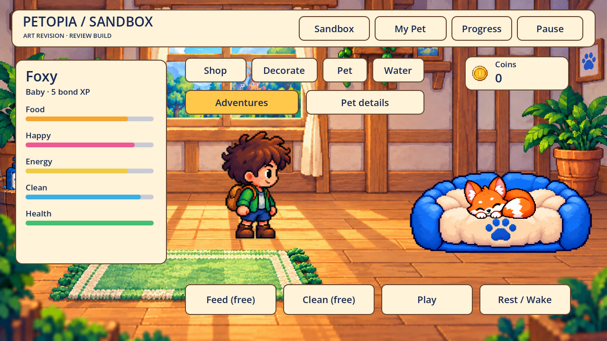
Rest · Foxy curled inside the bed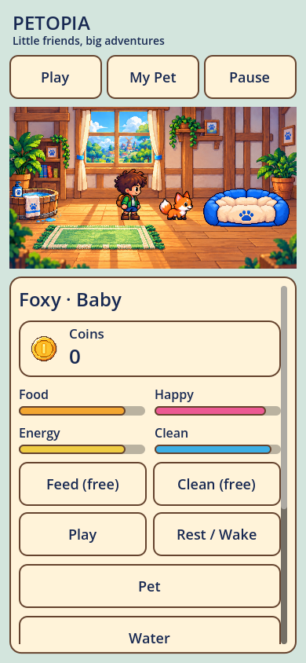
Portrait · empty bed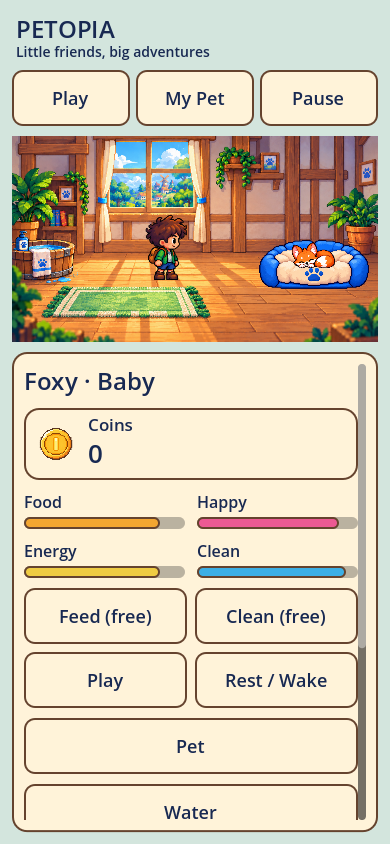
Portrait · sleeping bed after feedback clears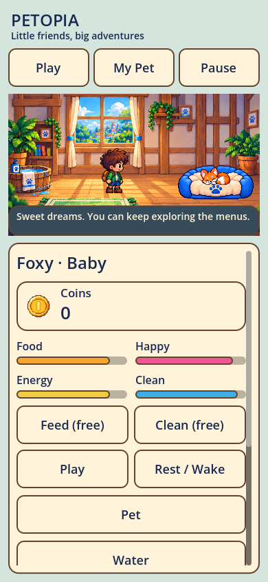
Rest feedback stays below the actors/bed
Feedback comparison · phone floor contact
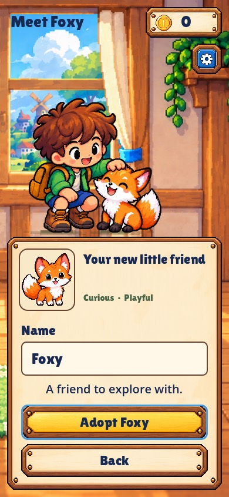
Before · pair on the window sillCurrent · room window above, fixed feet on the floorApproved concept directions
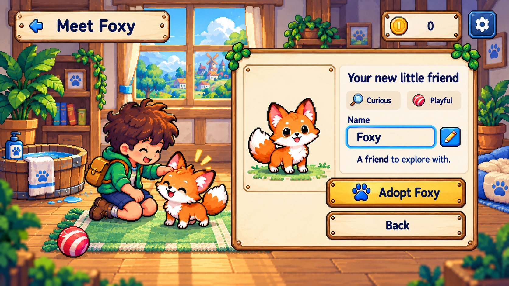
V05 · concept reference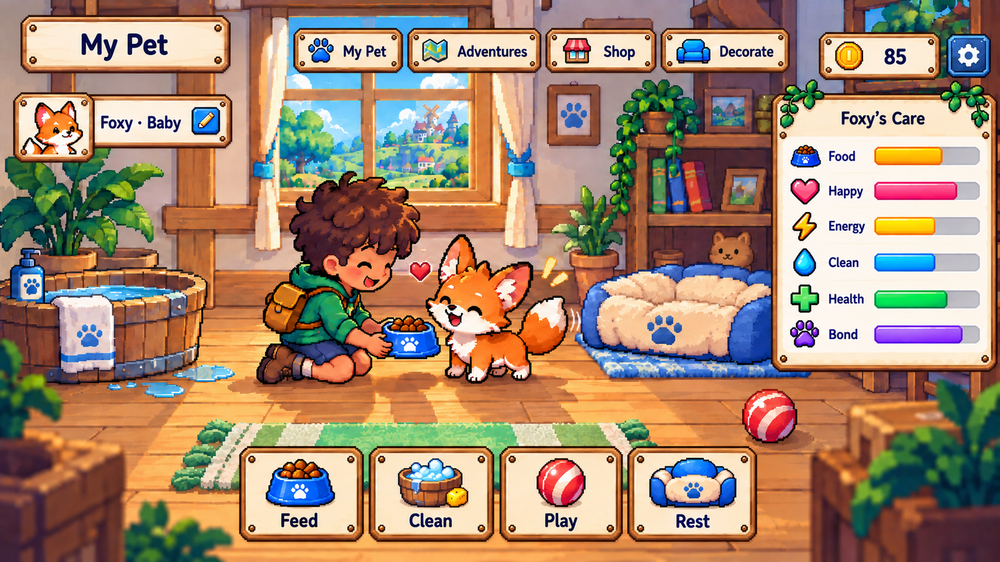
V03 · home proportions/furniture referenceValidation and sources
401 aggregate checks across eleven suites, including30 adoption/room checks and30 growth checks for safe targets at five sizes, retained name/back/settings, failed adoption writes, durable named adoption and sleep/restart/wake. Eleven actual captures retained. Physical phone keyboard/touch behavior, child playtests and final visual acceptance remain open. These static captures are not a frame-time benchmark.
Built-in image_gen assets: room plate, Foxy portrait, bed states. Sources, regions, pivots and state · Exact prompt set · Verification. Capture source: tools/capture_adoption.gd. Original GDD preserved.